Maxwell's Equations
Maxwell's equations are four equations for the electric field \(\mathbf E\) and the magnetic field \(\mathbf B\). For each field, one equation says where it spreads out from and one says what makes it swirl. Together with the force the fields exert on charges, they describe every electric and magnetic phenomenon of classical physics: a compass needle, a motor, a generator, a radio antenna, and light. James Clerk Maxwell assembled them between 1861 and 1865, added one term of his own, and found that they predict waves traveling at the speed of light; Oliver Heaviside later condensed Maxwell's twenty equations into the four vector equations written today.
This note goes through the four equations one at a time, each with its integral form and a concrete case, then the term Maxwell added, the wave that follows and its speed, the equations inside materials, and how a computer solves them. The figures come from the video's own computations: field lines traced numerically from Coulomb's law, a bar magnet's exact field from its loop currents, the exact field lines of a radiating antenna, and a finite-difference time-domain (FDTD) run.
Two fields
The electric field \(\mathbf E(\mathbf r, t)\) and the magnetic field \(\mathbf B(\mathbf r, t)\) assign a vector to every point \(\mathbf r\) in space at every time \(t\). They are defined by the force they exert on a point charge \(q\) moving with velocity \(\mathbf v\), the Lorentz force
\[\mathbf F = q\,(\mathbf E + \mathbf v \times \mathbf B).\]
So \(\mathbf E\), in volts per meter, is the force per unit charge on a charge at rest, and \(\mathbf B\), in teslas, pushes only on moving charges, at right angles to their velocity. A compass needle is a small magnet that turns until it points along \(\mathbf B\); that is how Hans Christian Ørsted found, in 1820, that a current makes a magnetic field. A field line follows the field's direction from point to point.
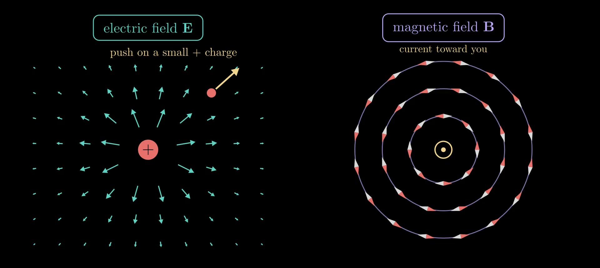
Figure 1. Left: the electric field of a positive charge, drawn as arrows (shortened where the field is strong), and the push it gives a small positive test charge. Right: compass needles around a wire carrying current toward the viewer turn to lie along circles: the magnetic field circles the wire.
The four equations
With charges and currents in empty space, in SI units:
\[\nabla\cdot\mathbf E = \frac{\rho}{\varepsilon_0}, \qquad \nabla\cdot\mathbf B = 0,\]
\[\nabla\times\mathbf E = -\frac{\partial\mathbf B}{\partial t}, \qquad \nabla\times\mathbf B = \mu_0\mathbf J + \mu_0\varepsilon_0\frac{\partial\mathbf E}{\partial t}.\]
Here \(\rho\) is the charge density, the charge per volume (C/m³); \(\mathbf J\) is the current density, the current per area (A/m²) flowing in its direction; \(\partial/\partial t\) is the rate of change in time at a fixed point; \(\varepsilon_0 = 8.854\,187\,8 \times 10^{-12}\) F/m is the electric constant and \(\mu_0 = 1.256\,637\,06 \times 10^{-6}\) N/A² the magnetic constant. The divergence \(\nabla\cdot\) measures how much a field spreads out from a point, and the curl \(\nabla\times\) how much it swirls around one; the next section defines both. In order, the equations are Gauss's law, Gauss's law for magnetism (no magnetic charge), Faraday's law and the Ampère–Maxwell law. They hold at every point and every time, and together with the Lorentz force they are the whole of classical electromagnetism.
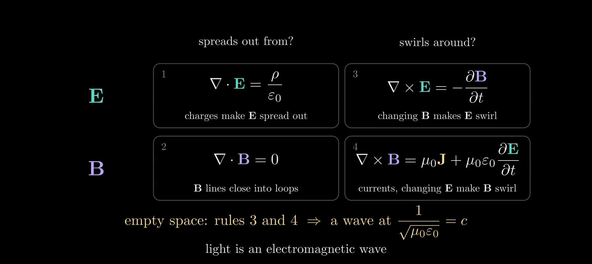
Figure 2. The four equations as a two-by-two grid: for each field, what it spreads out from (left) and what makes it swirl (right). In empty space, rules 3 and 4 alone make a wave that travels at \(1/\sqrt{\mu_0\varepsilon_0}\), the speed of light.
Divergence and curl
Both operators are defined with small closed shapes. The divergence of a vector field \(\mathbf F\) at a point is its net outflow through the closed surface \(\partial V\) of a small volume \(\Delta V\) around the point, per volume:
\[\nabla\cdot\mathbf F = \lim_{\Delta V\to 0}\frac{1}{\Delta V}\oint_{\partial V} \mathbf F\cdot d\mathbf S,\]
where \(d\mathbf S\) is a surface element pointing out of the volume. A positive divergence means more flows out than in: a source. The curl measures circulation. For a small loop \(C\) around a flat patch of area \(\Delta S\) with unit normal \(\hat{\mathbf n}\) (fingers of the right hand along the loop, thumb along \(\hat{\mathbf n}\)),
\[(\nabla\times\mathbf F)\cdot\hat{\mathbf n} = \lim_{\Delta S\to 0}\frac{1}{\Delta S}\oint_C \mathbf F\cdot d\mathbf l,\]
the push of the field along the loop, added up all the way around, per enclosed area. In Cartesian coordinates, \(\nabla\cdot\mathbf F = \partial_x F_x + \partial_y F_y + \partial_z F_z\) and \(\nabla\times\mathbf F = (\partial_y F_z - \partial_z F_y,\ \partial_z F_x - \partial_x F_z,\ \partial_x F_y - \partial_y F_x)\), where \(\partial_x\) is the partial derivative with respect to \(x\). Adding up these small pieces gives the divergence theorem, \(\oint_{\partial V} \mathbf F\cdot d\mathbf S = \int_V \nabla\cdot\mathbf F\,dV\), and Stokes' theorem, \(\oint_C \mathbf F\cdot d\mathbf l = \int_S (\nabla\times\mathbf F)\cdot d\mathbf S\) for any surface \(S\) bounded by \(C\). With them, each of Maxwell's equations has an integral form about any closed surface or any loop, used in the sections below.
A field can circle around something without having any curl where it circles. A long straight wire carrying current \(I\) has a magnetic field of size \(B = \mu_0 I/(2\pi r)\) at distance \(r\), running in circles around the wire. Around any loop that encloses the wire, the circulation is \(\mu_0 I\). Around a wedge beside the wire, between radii \(r_1 < r_2\) and spanning an angle \(\Delta\theta\), it is zero: the outer arc contributes \(B(r_2)\,r_2\,\Delta\theta = \mu_0 I\,\Delta\theta/(2\pi)\), the inner arc the same amount against the direction of the walk, and the radial sides nothing, since there the field is perpendicular to the path. The weaker push along the longer outer arc exactly cancels the stronger push along the shorter inner one. So the curl of this field is zero everywhere outside the wire and sits entirely inside it, where the current is.
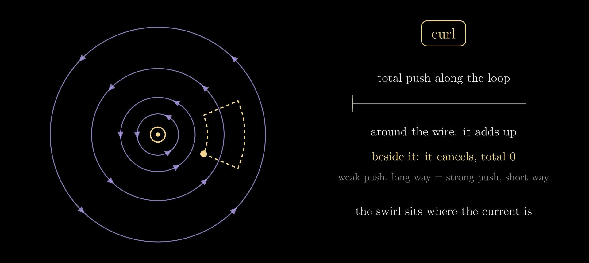
Figure 3. Circulation around a wire. The running total of the push along a loop that encloses the wire adds up; along a wedge beside the wire it returns to zero.
Rule 1: Gauss's law
The integral form of \(\nabla\cdot\mathbf E = \rho/\varepsilon_0\) is
\[\oint_{\partial V} \mathbf E\cdot d\mathbf S = \frac{Q_{\text{enc}}}{\varepsilon_0},\]
where \(Q_{\text{enc}}\) is the total charge inside the closed surface \(\partial V\). Electric field lines start on positive charges and end on negative ones, and a surface around empty space has as much field flowing in as out, whatever the field there is. For a point charge \(q\) and a sphere of radius \(r\) centered on it, symmetry makes \(\mathbf E\) radial and equal in size all over the sphere, so \(E \cdot 4\pi r^2 = q/\varepsilon_0\), which is Coulomb's law:
\[E = \frac{q}{4\pi\varepsilon_0 r^2}.\]
So \(\varepsilon_0\) sets how strong the field of a given charge is. It can be measured with charged plates: two parallel plates of area \(S_p\), a small gap \(g\) apart, hold a charge \(Q = \varepsilon_0 S_p U/g\) at voltage \(U\).
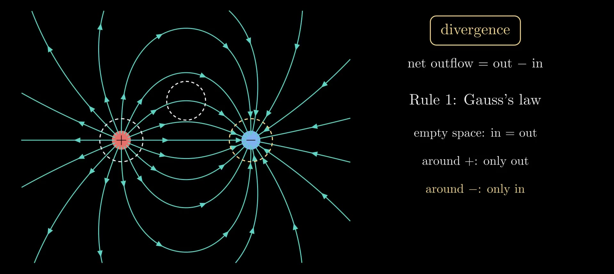
Figure 4. Gauss's law on a positive and a negative charge (field lines traced numerically from Coulomb's law). A bubble in empty space has as much field flowing in as out; around the positive charge the field only flows out, around the negative one only in.
Rule 2: no magnetic charge
The integral form of \(\nabla\cdot\mathbf B = 0\) is \(\oint_{\partial V} \mathbf B\cdot d\mathbf S = 0\) for every closed surface: no magnetic charge exists for a magnetic field line to start or end on, so the lines close on themselves (or run off to infinity). A bar magnet's field lines do not end at its poles. They run through the magnet from its south end to its north end and close outside it, and a bubble at a pole has as much field entering as leaving. Cutting a magnet in half gives two smaller magnets, never a lone north pole, and no experiment has found one.
The magnet in Figure 5 is computed exactly. A uniformly magnetized cylinder has the same \(\mathbf B\) as a sheet of current running around its side, which we take as a stack of circular loops. A loop of radius \(a\) carrying current \(I\), centered on the \(z\) axis at height \(z_0\), has a vector potential \(\mathbf A\) (with \(\mathbf B = \nabla\times\mathbf A\)) that points around the axis, of size
\[A_\phi(\rho, z) = \frac{\mu_0 I}{\pi\sqrt{m}}\sqrt{\frac{a}{\rho}}\left[\Big(1 - \frac{m}{2}\Big)\mathcal K(m) - \mathcal E(m)\right], \qquad m = \frac{4a\rho}{(a+\rho)^2 + (z - z_0)^2},\]
where \(\rho\) is the distance from the axis and \(\mathcal K(m) = \int_0^{\pi/2} du/\sqrt{1 - m\sin^2 u}\) and \(\mathcal E(m) = \int_0^{\pi/2} \sqrt{1 - m\sin^2 u}\,du\) are the complete elliptic integrals of the first and second kind. For a field with this symmetry, the field lines in a plane through the axis are the contours of the flux function \(\psi = \rho A_\phi\), because the magnetic flux through the circle of radius \(\rho\) at height \(z\) is exactly \(2\pi\psi(\rho, z)\). Drawing contours at equally spaced values of \(\psi\) therefore gives lines that each carry the same flux, so counting lines counts flux; Figure 6 uses this.
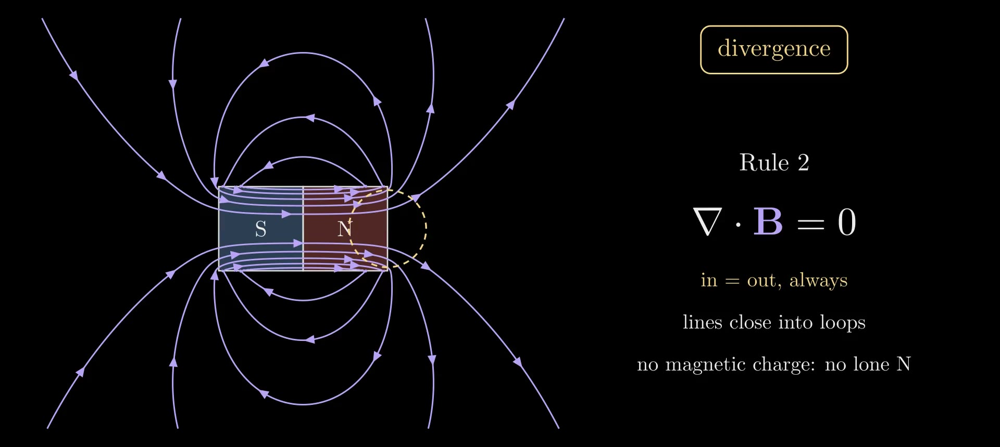
Figure 5. A bar magnet's magnetic field, computed exactly from its loop currents: the lines run through the magnet from S to N and close outside. A bubble at the north end has as much field entering as leaving.
Rule 3: Faraday's law
For a loop \(C\) that does not move, the integral form of \(\nabla\times\mathbf E = -\partial\mathbf B/\partial t\) is
\[\oint_C \mathbf E\cdot d\mathbf l = -\frac{d\Phi_B}{dt}, \qquad \Phi_B = \int_S \mathbf B\cdot d\mathbf S,\]
where \(\Phi_B\) is the magnetic flux through a surface \(S\) bounded by \(C\) (the same for every such surface, by rule 2). The left side is the electromotive force around the loop, the work the field does on a unit charge carried once around it; in a coil of wire with \(N\) turns it is \(N\) times larger and drives a current. The minus sign is Lenz's law: the current flows so that its own magnetic field opposes the change of flux. A changing magnetic field makes the electric field swirl whether or not a wire is there; the wire only lets the swirl move charge.
In Figure 6, a bar magnet slides along the axis of a coil. Because the field lines are equal-flux contours, the number of lines passing through the coil measures its flux: it rises from 0 to 10 of the magnet's 12 as the magnet goes in. The meter shows \(-d\Phi_B/dt\) computed along the magnet's path: it swings only while the magnet moves and returns to zero when it stops. A generator does the same continuously, turning coils past magnets or magnets past coils; most of the world's electricity is made this way.
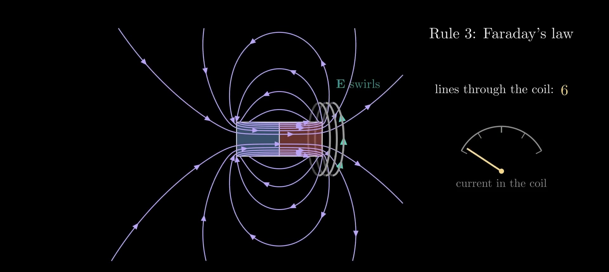
Figure 6. Faraday's law: as the magnet slides toward the coil, the flux through the coil changes, the electric field swirls around the coil (teal arrows) and drives a current.
Rule 4: Ampère's law and Maxwell's term
Without its last term, rule 4 is Ampère's law, \(\nabla\times\mathbf B = \mu_0\mathbf J\), whose integral form is \(\oint_C \mathbf B\cdot d\mathbf l = \mu_0 I_{\text{enc}}\), with \(I_{\text{enc}}\) the current through a surface bounded by \(C\). For the long wire, a circle of radius \(r\) gives \(B \cdot 2\pi r = \mu_0 I\), the field quoted above.
Ampère's law alone contradicts the conservation of charge. The divergence of a curl is always zero, so taking the divergence of \(\nabla\times\mathbf B = \mu_0\mathbf J\) gives \(\nabla\cdot\mathbf J = 0\): current could never flow into a region without flowing out of it. But charge does pile up. Conservation of charge says
\[\nabla\cdot\mathbf J + \frac{\partial\rho}{\partial t} = 0,\]
and in a capacitor that is being charged, current flows into one plate and out of the other while no charge crosses the gap between them. Gauss's law turns \(\partial\rho/\partial t\) into \(\varepsilon_0\,\nabla\cdot(\partial\mathbf E/\partial t)\), so the combination \(\mathbf J + \varepsilon_0\,\partial\mathbf E/\partial t\) always has zero divergence. Maxwell replaced \(\mathbf J\) by it:
\[\nabla\times\mathbf B = \mu_0\Big(\mathbf J + \varepsilon_0\frac{\partial\mathbf E}{\partial t}\Big), \qquad \oint_C \mathbf B\cdot d\mathbf l = \mu_0 I_{\text{enc}} + \mu_0\varepsilon_0\frac{d\Phi_E}{dt},\]
where \(\Phi_E = \int_S \mathbf E\cdot d\mathbf S\) is the electric flux through \(S\). The new term, \(\varepsilon_0\,\partial\mathbf E/\partial t\), is called the displacement current density. In the capacitor gap, plates of area \(S_p\) holding charges \(\pm Q\) make a field \(E = Q/(\varepsilon_0 S_p)\) between them (neglecting the fringe), so the displacement current through the gap is \(\varepsilon_0 S_p\, dE/dt = dQ/dt = I\), equal to the current in the wires. Nothing stops at the gap: in the wires the current is moving charge, in the gap it is changing \(\mathbf E\), and the magnetic field circles both alike, \(B = \mu_0 I/(2\pi r)\) at a distance \(r\) from the axis larger than the plates.
Maxwell introduced the term in 1861–62, reasoning from a mechanical model of the medium; the consistency argument above is how it is justified today. Its consequence, electromagnetic waves, was confirmed by Heinrich Hertz in 1887–88.
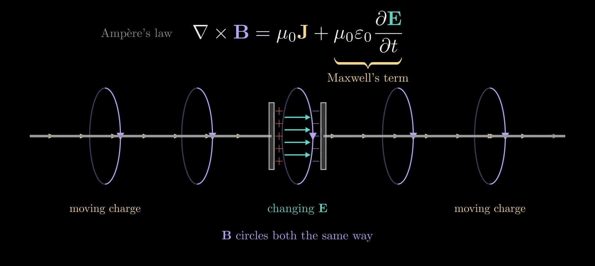
Figure 7. Maxwell's term in a charging capacitor: charge piles up on the plates, the electric field between them grows, and the magnetic field circles the gap just as it circles the wires.
Waves in empty space
With \(\rho = 0\) and \(\mathbf J = 0\), rules 3 and 4 couple the two fields: a changing \(\mathbf B\) makes \(\mathbf E\) swirl, and a changing \(\mathbf E\) makes \(\mathbf B\) swirl. A disturbance of either field therefore remakes the other a little farther on, and the pair travels as a wave. Figure 8 shows it in a simulation that steps rules 3 and 4 forward in time (the method is described below). It starts from a bump of \(\mathbf E\) alone, with \(\mathbf B = 0\); a magnetic field grows where \(\mathbf E\) is steepest, and the bump splits into two pulses running apart, each half as tall, the left-moving one with its \(\mathbf B\) flipped.
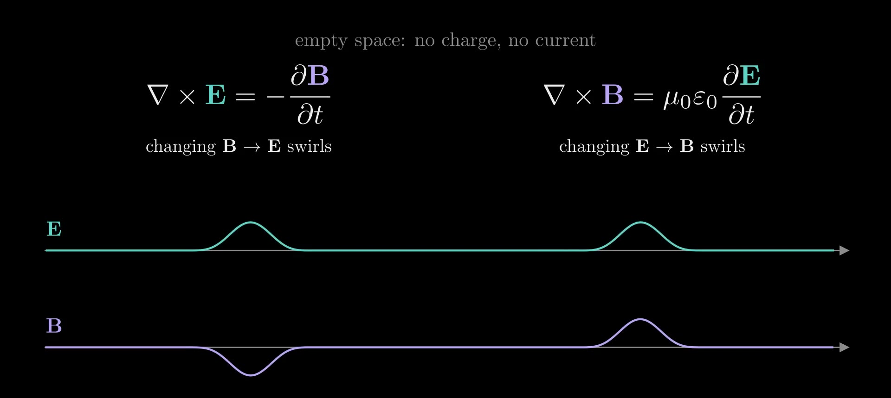
Figure 8. A one-dimensional FDTD run in empty space, started from a bump of \(\mathbf E\) with no \(\mathbf B\): it splits into two pulses that move apart at the same speed.
The speed, from one sliding bump
Take a wave moving along \(x\) with \(\mathbf E\) along \(y\) and \(\mathbf B\) along \(z\), each a fixed shape sliding at an unknown speed \(v\): \(E_y = f(x - vt)\) and \(B_z = h(x - vt)\). For any such shape, \(\partial f/\partial t = -v\,\partial f/\partial x\): where you stand, the value changes at \(v\) times the steepness of the shape. With these fields, \((\nabla\times\mathbf E)_z = \partial E_y/\partial x\) (around a small loop in the \(xy\) plane, the push up one side differs from the push down the other by the steepness times the loop's width) and \((\nabla\times\mathbf B)_y = -\partial B_z/\partial x\). Rules 3 and 4 become
\[\frac{\partial E_y}{\partial x} = -\frac{\partial B_z}{\partial t} = v\,\frac{\partial B_z}{\partial x}, \qquad \frac{\partial B_z}{\partial x} = -\mu_0\varepsilon_0\frac{\partial E_y}{\partial t} = \mu_0\varepsilon_0 v\,\frac{\partial E_y}{\partial x}.\]
Both shapes vanish ahead of the wave, so integrating along \(x\) gives \(E_y = v B_z\) and \(B_z = \mu_0\varepsilon_0 v E_y\). Substituting one into the other, \(E_y = \mu_0\varepsilon_0 v^2 E_y\), so a wave that is not zero needs
\[v = \frac{1}{\sqrt{\mu_0\varepsilon_0}}.\]
The shape dropped out: a pulse of any shape, and a sine wave of any wavelength, travels at this one speed.
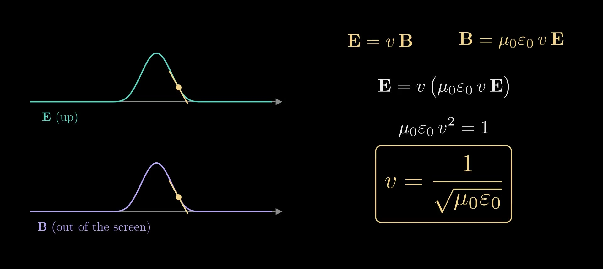
Figure 9. The speed from a sliding bump: rule 3 gives \(E = vB\), rule 4 gives \(B = \mu_0\varepsilon_0 vE\), and both hold only at \(v = 1/\sqrt{\mu_0\varepsilon_0}\).
In three dimensions
Taking the curl of rule 3 and using the identity \(\nabla\times(\nabla\times\mathbf E) = \nabla(\nabla\cdot\mathbf E) - \nabla^2\mathbf E\), where \(\nabla^2 = \partial_x^2 + \partial_y^2 + \partial_z^2\) is the Laplacian, together with \(\nabla\cdot\mathbf E = 0\) and rule 4, gives the wave equation
\[\nabla^2\mathbf E = \mu_0\varepsilon_0\frac{\partial^2\mathbf E}{\partial t^2},\]
and \(\mathbf B\) obeys the same one. Write \(c = 1/\sqrt{\mu_0\varepsilon_0}\). The plane-wave solutions \(\mathbf E = \mathbf E_0\cos(\mathbf k\cdot\mathbf r - \omega t)\), with wave vector \(\mathbf k\) (along the direction of travel, of size \(k = 2\pi/\lambda\) for wavelength \(\lambda\)) and angular frequency \(\omega = ck\), satisfy rule 1 only if \(\mathbf k\cdot\mathbf E_0 = 0\): the field is transverse. Rule 3 then gives \(\mathbf B = \hat{\mathbf k}\times\mathbf E/c\), with \(\hat{\mathbf k}\) the unit vector along \(\mathbf k\): \(\mathbf B\) is at right angles to \(\mathbf E\) and to the direction of travel, oscillates in step with \(\mathbf E\), and is \(c\) times smaller. The wave carries energy along \(\mathbf E\times\mathbf B\): the Poynting vector \(\mathbf E\times\mathbf B/\mu_0\) is the power per area flowing through a surface. Which way \(\mathbf E\) points, within the plane at right angles to \(\mathbf k\), is the wave's polarization, the subject of the Polarization and Jones Calculus note.
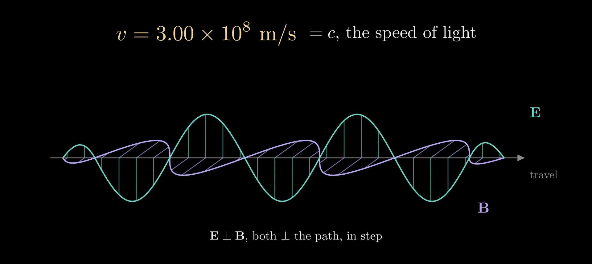
Figure 10. A plane light wave: \(\mathbf E\) (teal) and \(\mathbf B\) (purple) oscillate in step, at right angles to each other and to the direction of travel.
How an antenna launches the wave
An antenna drives charge back and forth along a short wire: a dipole \(p(t) = p_0\cos\omega t\) along a vertical axis. Its exact electric field lines, in a plane through the axis, are the contours of
\[\psi_E(r, \theta, t) = \sin^2\theta\left[\frac{\cos(kr - \omega t)}{kr} + \sin(kr - \omega t)\right],\]
with \(r\) the distance from the dipole, \(\theta\) the angle from its axis and \(k = \omega/c\). Close to the antenna (\(kr \ll 1\)) the first term dominates and the lines run from one end of the antenna to the other, like the static field of two opposite charges; farther out, the lines pinch off into closed loops that travel outward at \(c\), strongest at right angles to the antenna (\(\sin^2\theta = 1\)) and absent along its axis.
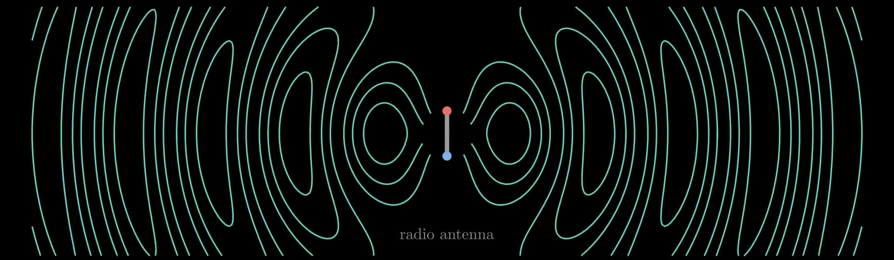
Figure 11. The exact electric field lines of a radiating antenna, a dipole oscillating up and down: near the antenna they connect its two ends; farther out they close into loops that move away at the speed of light.
The speed of light
With the two constants,
\[c = \frac{1}{\sqrt{\mu_0\varepsilon_0}} = \frac{1}{\sqrt{(1.256\,637\times10^{-6})(8.854\,188\times10^{-12})}}\ \text{m/s} = 2.997\,92\times10^{8}\ \text{m/s}.\]
Both constants come from electricity and magnetism alone: \(\varepsilon_0\) from forces between charges, \(\mu_0\) from forces between currents. In Maxwell's day their combination had been measured as the ratio of the electrostatic to the electromagnetic unit of charge, by Wilhelm Weber and Rudolf Kohlrausch in 1856, who discharged a charged jar through a galvanometer; it came to about \(3.1\times10^8\) m/s. Hippolyte Fizeau had measured the speed of light in 1849 with a toothed wheel, at about \(3.1\times10^8\) m/s. Maxwell noticed the agreement in 1862 and concluded that light is an electromagnetic wave. Today the meter is defined so that \(c\) is exactly 299 792 458 m/s, and since the 2019 revision of the SI, \(\varepsilon_0\) and \(\mu_0\) are measured constants tied together by \(\mu_0\varepsilon_0 c^2 = 1\).
Nothing in the derivation fixes the wavelength or the frequency, \(c/\lambda\), and nature uses all of them: radio waves (meters to kilometers), microwaves (about a millimeter to a meter), infrared, visible light (about 400 to 700 nm), ultraviolet, X-rays (about 0.01 to 10 nm) and gamma rays are the same kind of wave.
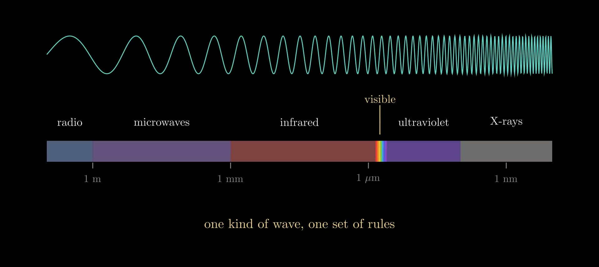
Figure 12. The electromagnetic spectrum on a logarithmic scale of wavelength: visible light is a thin slice.
Inside materials
Inside a material, the fields push the material's own charges: electrons shift within atoms, and molecules turn, adding bound charge and current to \(\rho\) and \(\mathbf J\). They are accounted for by the polarization \(\mathbf P\) (dipole moment per volume) and the magnetization \(\mathbf M\) (magnetic moment per volume), through the displacement field \(\mathbf D = \varepsilon_0\mathbf E + \mathbf P\) and the field \(\mathbf H = \mathbf B/\mu_0 - \mathbf M\). The equations then read
\[\nabla\cdot\mathbf D = \rho_{\text f}, \qquad \nabla\cdot\mathbf B = 0, \qquad \nabla\times\mathbf E = -\frac{\partial\mathbf B}{\partial t}, \qquad \nabla\times\mathbf H = \mathbf J_{\text f} + \frac{\partial\mathbf D}{\partial t},\]
with \(\rho_{\text f}\) and \(\mathbf J_{\text f}\) the free charge and current, those not bound in the material. In a linear, isotropic material, \(\mathbf D = \varepsilon\mathbf E\) and \(\mathbf B = \mu\mathbf H\), with permittivity \(\varepsilon = \varepsilon_r\varepsilon_0\) and permeability \(\mu = \mu_r\mu_0\) (\(\varepsilon_r\) and \(\mu_r\) are the relative values), and the same derivation gives waves of speed
\[v = \frac{1}{\sqrt{\mu\varepsilon}} = \frac{c}{n}, \qquad n = \sqrt{\varepsilon_r\mu_r}.\]
This \(n\) is the refractive index. For non-magnetic materials (\(\mu_r \approx 1\)), \(n = \sqrt{\varepsilon_r}\), with \(\varepsilon_r\) taken at the light's own frequency: glass has \(\varepsilon_r \approx 2.25\) at visible frequencies, so \(n \approx 1.5\), while its static \(\varepsilon_r\) is several times larger, because the slower ways a material polarizes cannot follow a field that oscillates \(10^{14}\) to \(10^{15}\) times a second. This dependence on frequency is dispersion.
At a boundary between two materials with no surface charge or current, the equations require the components of \(\mathbf E\) and \(\mathbf H\) along the surface, and the components of \(\mathbf D\) and \(\mathbf B\) across it, to be continuous. Matching plane waves on the two sides gives the law of reflection, Snell's law \(n_1\sin\alpha_1 = n_2\sin\alpha_2\) for the angles \(\alpha_1, \alpha_2\) from the normal, and the Fresnel coefficients for how much light is reflected. The optics notes build on these: Optical Waveguides (light trapped by total internal reflection), Angular Spectrum Method (a field propagated as a sum of plane waves) and Flat Optics: DOEs and Metasurfaces (thin structures that set the phase of light).
Solving them on a computer: FDTD
The finite-difference time-domain method (FDTD), introduced by Kane Yee in 1966, steps rules 3 and 4 forward in time on a grid. It stores \(\mathbf E\) and \(\mathbf B\) on two grids offset by half a cell in space and half a step in time (the Yee cell), and leapfrogs: \(\mathbf B\) is advanced from the curl of \(\mathbf E\), then \(\mathbf E\) from the curl of \(\mathbf B\). In one dimension, with \(E_y\) at the points \(x_i = i\,\Delta x\) and times \(t_n = n\,\Delta t\), and \(B_z\) halfway between, at \(x_{i+1/2}\) and \(t_{n+1/2}\), the two updates are
\[B_z\big|_{i+1/2}^{\,n+1/2} = B_z\big|_{i+1/2}^{\,n-1/2} - \frac{\Delta t}{\Delta x}\Big(E_y\big|_{i+1}^{\,n} - E_y\big|_{i}^{\,n}\Big),\]
\[E_y\big|_{i}^{\,n+1} = E_y\big|_{i}^{\,n} - \frac{\Delta t}{\mu_0\varepsilon_0\,\Delta x}\Big(B_z\big|_{i+1/2}^{\,n+1/2} - B_z\big|_{i-1/2}^{\,n+1/2}\Big).\]
Each update is rule 3 or rule 4 with the derivatives replaced by centered differences, accurate to second order in \(\Delta x\) and \(\Delta t\). The scheme is stable when \(c\,\Delta t \le \Delta x\) in one dimension (\(\Delta x/\sqrt2\) on a square two-dimensional grid, \(\Delta x/\sqrt3\) in three), and because the difference form of the divergence of a difference-form curl is exactly zero, it keeps the divergence of \(\mathbf B\) (and of \(\mathbf E\) where there is no charge) unchanged from step to step: rules 1 and 2 hold automatically if they hold at the start. Figure 8 is such a run, with \(\Delta x = 0.02\) and \(c\,\Delta t = \Delta x/2\) in units where \(c = 1\).
The waves in the Flat Optics: DOEs and Metasurfaces video were computed the same way in two dimensions, with the fields \(E_z\), \(H_x\) and \(H_y\) on a grid of 32 cells per wavelength. The glass there was given \(\varepsilon_r = \mu_r = n\): light then travels at \(c/n\), as in glass, but the boundary reflects nothing, like a perfect anti-reflection coating.
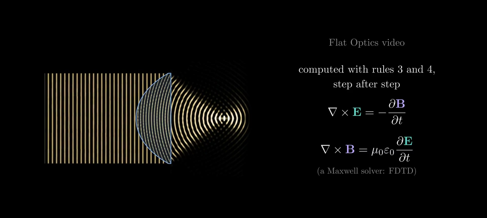
Figure 13. The Flat Optics video's thick lens and its wave, computed by a two-dimensional FDTD run of rules 3 and 4.
Summary
In integral form, for any closed surface \(\partial V\) and any loop \(C\) bounding a surface \(S\):
\[\oint_{\partial V}\mathbf E\cdot d\mathbf S = \frac{Q_{\text{enc}}}{\varepsilon_0}, \qquad \oint_{\partial V}\mathbf B\cdot d\mathbf S = 0,\]
\[\oint_C \mathbf E\cdot d\mathbf l = -\frac{d\Phi_B}{dt}, \qquad \oint_C \mathbf B\cdot d\mathbf l = \mu_0 I_{\text{enc}} + \mu_0\varepsilon_0\frac{d\Phi_E}{dt}.\]
Charges make \(\mathbf E\) spread out, and \(\mathbf B\) never spreads out, so its lines close. A changing \(\mathbf B\) makes \(\mathbf E\) swirl, and currents and a changing \(\mathbf E\) make \(\mathbf B\) swirl. In empty space the two swirls carry each other as a wave at \(1/\sqrt{\mu_0\varepsilon_0}\), the speed of light: light is an electromagnetic wave.
References
- J. C. Maxwell, "A Dynamical Theory of the Electromagnetic Field," Philosophical Transactions of the Royal Society of London 155, 459–512 (1865).
- K. S. Yee, "Numerical solution of initial boundary value problems involving Maxwell's equations in isotropic media," IEEE Transactions on Antennas and Propagation 14(3), 302–307 (1966).
- D. J. Griffiths, Introduction to Electrodynamics, 4th ed., Cambridge University Press (2017).
- J. D. Jackson, Classical Electrodynamics, 3rd ed., Wiley (1999).